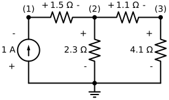
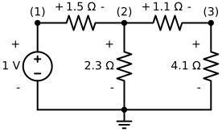

Código
import numpy as np
import matplotlib.pyplot as plt
import schemdraw
import schemdraw.elements as elmPedro H. N. Vieira
11 de agosto de 2022
A fundação da teoria de circuitos elétricos consiste da Lei de Ohm \[ V = R \cdot I, \] que relaciona a tensão \(V\) sobre um elemento resistivo de valor \(R\) com a corrente \(I\) passando por ele; e das duas Leis de Kirchhoff.
O valor recíproco da resistência elétrica \(R\) é a admitância \(Y\), ou seja, \[ Y = \frac{1}{R}. \]
A Lei de Kirchhoff das Correntes diz que a soma das correntes entrando num nó do circuito é igual à soma das correntes saindo do mesmo. Em outra palavras, pode-se convencionar que as correntes que entram num nó são positivas e as que saem são negativas. Assim, a Lei de Kirchhoff das Correntes pode ser equacionada por: \[ \sum_{k=1}^{N_n} I_k = 0, \] onde \(I_k\) é a corrente no elemento \(k\) conectado ao nó.
A Lei de Kirchhoff das Tensões enuncia que a soma das tensões numa laço (um caminho fechado) do circuito é zero. \[ \sum_{k=1}^{N_\ell} V_k = 0, \] onde \(V_k\) é a tensão sobre o elemento \(k\).
Aplicando-se a Lei de Kirchhoff das Correntes ao nó \(n\) de um circuito elétrico composto exclusivamente de resistores e fontes de corrente independentes, obtém-se a seguinte equação: \[ \sum_{k=1}^{N_r} \frac{V_{k+} - V_{k-}}{R_k} = \sum_{f=1}^{N_i} I_f \] onde \(N_r\) e \(N_i\) são o número de resistores e fontes de corrente conectadas ao nó, respectivamente. Convenciona-se que todo resistor possui um terminal (nó) positivo e um negativo cujos potenciais elétricos são \(V_{k+}\) e \(V_{k-}\), respectivamente. A equação acima nos diz que a soma das correntes injetadas no nó pelas fontes é igual à soma das correntes nos resistores.
Repetindo-se o procedimento acima para todos os \(N_n\) nós do circuito, obtém-se \(N_n\) equações lineares que são linearmente dependentes. Para garantir a unicidade da solução (um sistema linearmente independente), escolhe-se um nó para ser o Terra (o potencial elétrico nele é arbitrado como zero) e a equação correspondente a ele é descartada. O sistema linear resultante é \[ [Y] \cdot [V] = [I] \] onde \([Y]\) é a matriz (simétrica) de admitâncias nodais, \([V]\) é o vetor de potenciais nodais e \([I]\) é o vetor de correntes injetadas nos nós.
Convencionando que cada nó possui uma numeração (índice) positivo, atribuindo-se o índice 0 ao nó Terra, o seguinte algorítimo permite construir o sistema linear elemento a elemento do circuito. Dizemos que cada elemento se “carimba” no sistema linear.
Y := matriz de admitâncias
I := vetor de correntes injetadas
Para cada elemento E:
no1 := nó positivo de E
no2 := nó negativo de E
se E é um resistor:
r := resistência de E
Y[no1, no2] = Y[no1, no2] - 1 / r
Y[no2, no1] = Y[no1, no2]
Y[no1, no1] = Y[no1, no1] + 1 / r
Y[no2, no2] = Y[no2, no2] + 1 / r
se E é uma fonte de corrente:
i := valor da fonte E
I[no1] = I[no1] + i
I[no2] = I[no2] - i
Descartam-se a linha e a coluna de índice 0 da matriz Y
Descarta-se o valor de índice 0 do vetor IImportam-se alguns módulos (bibliotecas).
Define-se a classe de objetos Elemento básicos do circuito, os quais são inicializados (construídos) por Elemento(no1, no2, valor, nome). O valor nome do elemento é opicional e será vazio se não atribuído. A partir deste Elemento, definem-se as classes de objetos Resistor e Fonte_Corrente que herdam todos os métodos e atributos de Elemento (conceitos de Programação Orientada a Objetos), cada qual redefine a forma que se carimbam, através do método carimbar, no sistema linear. Há testes se, então para ignorar o nó Terra (0) na construção do sistema linear.
class Elemento(object):
def __init__(self, no1, no2, valor, nome=""): # esse é o construtor do objeto
if no1 < 0 or no2 < 0:
raise ValueError("O nó deve ser um valor não negativo.")
self.no1 = no1
self.no2 = no2
self.valor = valor
self.nome = nome
def __repr__(self): # esse é o "print" do objeto
s = "Elemento " + self.nome + " de valor " + str(self.valor)
s += " do nó " + str(self.no1) + " para o nó " + str(self.no2)
return s
def carimbar(self, Y, I, nn):
return None
class Resistor(Elemento):
def __init__(self, no1, no2, valor, nome=""):
if valor <= 0.0:
raise ValueError("Resistor deve ter um valor positivo.")
super().__init__(no1, no2, valor, nome)
def carimbar(self, Y, I=None, nn=None):
no1 = self.no1 - 1
no2 = self.no2 - 1
admitancia = 1.0 / self.valor
if no1 >= 0:
Y[no1, no1] += admitancia
if no2 >= 0:
Y[no2, no2] += admitancia
if no1 >= 0 and no2 >= 0:
Y[no1, no2] += -admitancia
Y[no2, no1] = Y[no1, no2]
class Fonte_Corrente(Elemento):
def __init__(self, no1, no2, valor, nome=""):
super().__init__(no1, no2, valor, nome)
def carimbar(self, Y, I, nn=None):
no1 = self.no1 - 1
no2 = self.no2 - 1
if no1 >= 0:
I[no1] += -self.valor
if no2 >= 0:
I[no2] += self.valorA função abaixo identifica quantos nós há no circuito a partir da lista de elementos netlist e retorna o índice do maior nó.
Usamos o módulo SchemDraw para desenhar um circuito. O número (índice) dos nós são os números em parênteses e estão indicados, para cada elemento, qual nó é arbitrado como o positivo e o negativo para ele. A convenção adotada é de que todas as correntes nos elementos fluem do nó positivo para o negativo.
with schemdraw.Drawing() as d:
d += (I := elm.SourceI().up().label(('+', '1 A', '-')))
d += (R1 := elm.Resistor().right().label(('+', '1.5 Ω', '-')))
d += (R2 := elm.Resistor().right().label(('+', '1.1 Ω', '-')))
d += (R3 := elm.Resistor().down().label(('+', '4.1 Ω', '-')))
d += elm.Line().left()
d += (R4 := elm.Resistor().up().label(('-', '2.3 Ω', '+')))
d += elm.Line().endpoints(I.start, R4.start)
d += elm.Ground()
d += elm.Dot().at(R1.start).label("(1)")
d += elm.Dot().at(R1.end).label("(2)")
d += elm.Dot().at(R2.end).label("(3)")
d += elm.Dot().at(R4.start)
Criamos a lista de elementos netlist, criamos uma matriz Y e um vetor I de zeros e, então, iteramos cada elemento na netlist para montar o sistema linear.
netlist = [
Fonte_Corrente(0, 1, 1.0),
Resistor(1, 2, 1.5),
Resistor(2, 3, 1.1),
Resistor(2, 0, 2.3),
Resistor(3, 0, 4.1),
]
n = maior_no(netlist)
Y = np.zeros((n,n))
I = np.zeros((n,))
for elemento in netlist:
elemento.carimbar(Y, I)
V = np.linalg.solve(Y, I)
for i in range(n):
print("Potencial no nó" + str(i+1) + ":", round(V[i], 2), "V")Potencial no nó1: 3.09 V
Potencial no nó2: 1.59 V
Potencial no nó3: 1.26 VQuando o circuito tem uma fonte de tensão, ideal e independente, a análise nodal não consegue tratá-la. Por isso, é necessário, para cada fonte de tensão \(V_f\), adicionar mais uma equação ao sistema linear e tratar a corrente na fonte como uma variável. A nova equação é da forma \[ V_{k+} - V_{k-} = V_f. \]
Assim sendo, o algoritimo para “carimbar” o sistema linear ampliado com fontes de tensão é:
nn := número de nós no sistema
nv := número de fontes de tensão
Y := matriz quadrada de admitâncias ampliada cuja ordem é (nn + nv)
I := vetor de correntes injetadas concatenado com
o vetor de fontes de tensão, cuja dimensão é dimensão (nn + nv)
Para cada elemento E:
no1 := nó positivo de E
no2 := nó negativo de E
se E é um resistor:
r := resistência de E
Y[no1, no2] = Y[no1, no2] - 1 / r
Y[no2, no1] = Y[no1, no2]
Y[no1, no1] = Y[no1, no1] + 1 / r
Y[no2, no2] = Y[no2, no2] + 1 / r
se E é uma fonte de corrente:
i := valor da fonte E
I[no1] = I[no1] + i
I[no2] = I[no2] - i
se E é uma fonte de tensão:
v := valor da fonte E
e := índice da fonte E
Y[no1, (nn - 1 + e)] = -1
Y[no2, (nn - 1 + e)] = 1
Y[(nn - 1 + e), no1] = 1
Y[(nn - 1 + e), no2] = -1
I[(nn - 1 + e)] = v
Descartam-se a linha e a coluna de índice 0 da matriz Y
Descarta-se o valor de índice 0 do vetor IDefinimos a seguir a classe de objetos Fonte_Tensao. É necessário, para montar o sistema linear, dar um índice único a cada fonte de tensão.
class Fonte_Tensao(Elemento):
def __init__(self, no1, no2, valor, indice, nome=""):
if indice < 1:
raise ValueError("indice deve ser um valor positivo.")
super().__init__(no1, no2, valor, nome)
self.indice = indice
def carimbar(self, Y, I, nn):
no1 = self.no1 - 1
no2 = self.no2 - 1
e = self.indice
I[(nn - 1 + e)] = self.valor
if no1 >= 0:
Y[no1, (nn - 1 + e)] = -1
Y[(nn - 1 + e), no1] = 1
if no2 >= 0:
Y[no2, (nn - 1 + e)] = 1
Y[(nn - 1 + e), no2] = -1
if no1 >= 0 and no2 >= 0:
Y[id1, id2] += -1
Y[id2, id1] = Y[id1, id2]Vamos substituir a fonte de corrente do exemplo anterior por uma fonte de tensão e resolver o circuito.
with schemdraw.Drawing() as d:
d += (I := elm.SourceV().up().label(('-', '1 V', '+')))
d += (R1 := elm.Resistor().right().label(('+', '1.5 Ω', '-')))
d += (R2 := elm.Resistor().right().label(('+', '1.1 Ω', '-')))
d += (R3 := elm.Resistor().down().label(('+', '4.1 Ω', '-')))
d += elm.Line().left()
d += (R4 := elm.Resistor().up().label(('-', '2.3 Ω', '+')))
d += elm.Line().endpoints(I.start, R4.start)
d += elm.Ground()
d += elm.Dot().at(R1.start).label("(1)")
d += elm.Dot().at(R1.end).label("(2)")
d += elm.Dot().at(R2.end).label("(3)")
d += elm.Dot().at(R4.start)
netlist = [
Fonte_Tensao(1, 0, 1.0, 1),
Resistor(1, 2, 1.5),
Resistor(2, 3, 1.1),
Resistor(2, 0, 2.3),
Resistor(3, 0, 4.1),
]
nn = maior_no(netlist)
nv = 1 # número de fontes de tensão
m = nv + nn
Y = np.zeros((m, m))
I = np.zeros((m,))
for elemento in netlist:
elemento.carimbar(Y, I, nn)
V = np.linalg.solve(Y, I)
for i in range(nn):
print("Potencial no nó" + str(i+1) + ":", round(V[i], 2), "V")
for i in range(nv):
print("Corrente na fonte de tensão " + str(i+1) + ":", round(V[nn + nv - 1], 2), "A")Potencial no nó1: 1.0 V
Potencial no nó2: 0.52 V
Potencial no nó3: 0.41 V
Corrente na fonte de tensão 1: 0.32 APara circuitos que variam no tempo, com elementos não resistivos (capacitores, indutores, diodos, etc) ou fontes dependentes, estes elementos são sintetizados, a cada passo no tempo, num circuito resistivo equivalente que depende do método de integração numérica adotado e dos valores obtidos no passo de tempo anterior. Para aqueles que desejam se aprofundar no assunto, recomendo o livro de Najm (2010).